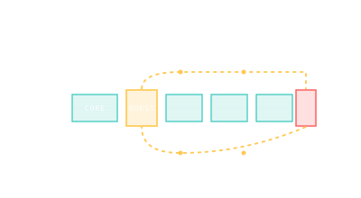

EVA — Extravehicular Activity
A spacewalk: the highest-risk, highest-reward portion of a crewed mission, capped at about 8 hours by suit consumables.

101 · zoom in
An EVA — extravehicular activity — is when a crew member leaves the pressurized interior of the station to work outside in vacuum. Every external task that can't be done by a robotic arm — installing a module, replacing a battery, repairing a coolant leak — happens on an EVA. They're choreographed to the minute, rehearsed underwater for hundreds of hours, and capped at about 8 hours each by the suit's oxygen and CO₂ scrubber capacity.
EVAs start in the airlock — a small two-door compartment where the crew prebreathes 100% oxygen for 60-90 minutes (washing nitrogen out of the bloodstream so they don't get the bends), then depressurize the lock and float out. ISS uses Quest as the US EVA hub; the Russian segment uses Pirs (now Poisk after Pirs was deorbited in 2021). Tiangong's primary airlock is on the Wentian module.
The crew tethers to handrails on the outside of the station — losing your grip means the safety tether catches you, but the SAFER jetpack on the suit's back provides a last-resort propulsive recovery if you somehow detach from both. Tools are tied to D-rings, gloves are pressurized and stiff (which is why hand fatigue is the #1 EVA-day problem), and the suit's heads-up display shows oxygen, CO₂, battery, and tether status.
Suit consumables: ISS EMU (Extravehicular Mobility Unit) carries about 8 hours of oxygen + battery + cooling-water sublimation. CO₂ scrubbing is the typical limiter — when the LiOH or amine-swing canister saturates, the EVA ends.
Prebreathe protocol: 60-90 minutes of 100% O₂ at reduced pressure to wash nitrogen from blood (decompression-sickness prevention). Russian Orlan suits operate at higher pressure than US EMU and need shorter prebreathe.
Translation: EVAs use handrails (yellow) covering the entire exterior of the station; tools and crew are tethered. SAFER (Simplified Aid For EVA Rescue) jetpack: 24 small thrusters on the suit's PLSS backpack, 1.4 m/s ∆v total — emergency recovery only.
Records: Anatoly Solovyev holds the cumulative record at 78h 28m across 16 EVAs. The longest single EVA is 8h 56m (STS-102, 2001). Most EVAs ever performed at one location: ISS, with over 270 by 2025.
Risk profile: vehicle-loss events on EVA are rare but documented — the 2013 Parmitano helmet-water incident on EVA-23 nearly drowned an astronaut and forced redesigns of the EMU's water-separator. Suit puncture, lost-tether, and CO₂ buildup are the live threats.